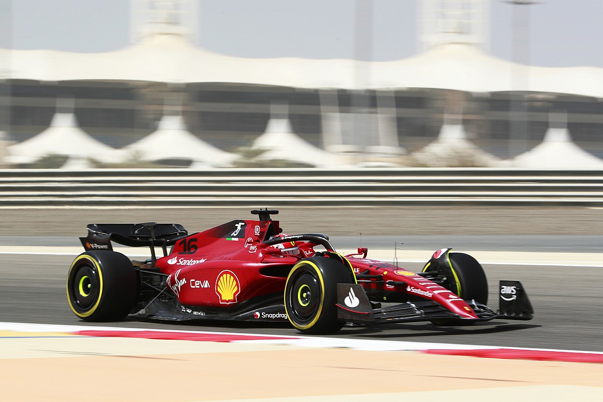

Formula 1 (F1)
Formula 1 is considered the pinnacle of motorsport, as it is a racing competition between the fastest cars made. What makes this sport even more intriguing is that it is also a sport that focuses on engineering the best possible car. It is not only an insane racing sport, but it is also like a big science fair project for the teams.



- Most Driver World Championships: Tie between Michael Schumacher and Lewis Hamilton (7)
- Most Constructor World Championships: Scuderia Ferrari
- Most Popular Race: Monaco Grand Prix